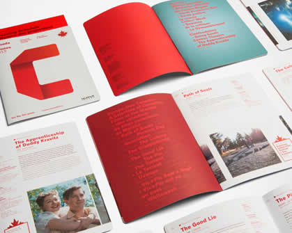

Disasterproofs is an organisation that help people during disasters by providing them food, shelter and other necessities during the crises. This organisation consists of volunteers from around the world who are willing to work for the betterment of the needy. If you are interested in contributing to this organisation by providing any kind of help then you are most welcome. you can provide help through clothes, foods and money.


- 